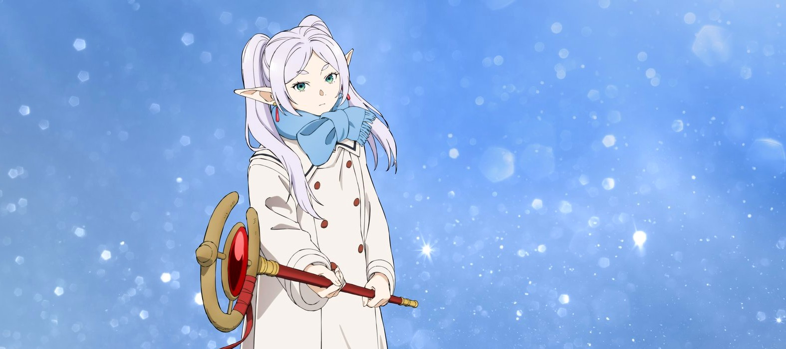

A MORE DELIBERATE KIND OF MOMENTUM
Season 2 inherits Frieren’s central interest in time, but its continuation gives the journey a different pressure. The party is no longer defined only by the surprise of setting out together; shared travel has created habits, expectations, and responsibilities. That makes each new obstacle a test of how well the companions can work as an ensemble. Frieren’s immense experience remains an advantage, yet the season is most engaging when experience cannot replace judgment. Fern’s growing confidence and Stark’s continuing effort to act despite fear keep the group’s progress human in scale. The contrast between ancient magic and everyday decisions remains one of the show’s best tools. A difficult road can be made meaningful by the way the characters divide labour, communicate, and notice one another. The result is forward movement that feels earned rather than rushed.
THE ENSEMBLE UNDER PRESSURE
What distinguishes this season is the way it lets competence and vulnerability share the same scene. The characters are capable, but capability does not erase disagreement or uncertainty. Their conversations carry the memory of earlier experiences, so familiar personalities now produce more layered responses. Frieren’s distance can read as calm, humour, or emotional avoidance depending on who is beside her. Fern’s precision can become care as well as criticism, while Stark’s hesitation gives the group a visible measure of risk. These tensions prevent the expedition from becoming a simple sequence of destinations. Fantasy world-building matters here because the world’s old magic and long history continually challenge the party’s assumptions. Season 2 is strongest when a technical problem becomes a character problem, then resolves through trust rather than a single impressive spell.
FINAL VERDICT
Season 2 works as a continuation because it deepens the series’ original promise without abandoning its quiet identity. Its adventure remains beautiful, but the emotional interest lies in watching a group learn what it means to continue together. Viewers who responded to the first season’s balance of reflective drama and fantasy action will find a natural next chapter here. The official Crunchyroll listing identifies the season’s premiere as January 16, 2026; regional availability and language options should still be checked before watching.
CHECK OFFICIAL CRUNCHYROLL LISTING →